当前位置：首页>当鞋子遇上浮世绘，还真有点意思
当鞋子遇上浮世绘，还真有点意思
说起日本的传统艺术
相信很多人都会想到浮世绘
这种在日本文化中
经常可以见到艺术风格
不仅影响日本的文化发展
同时也在潮流圈内受到越来越多人的喜欢
不少设计师开始把浮世绘风格的图案
加入到服饰当中
潮流和传统文化之间的碰撞
让潮流单品别具风味
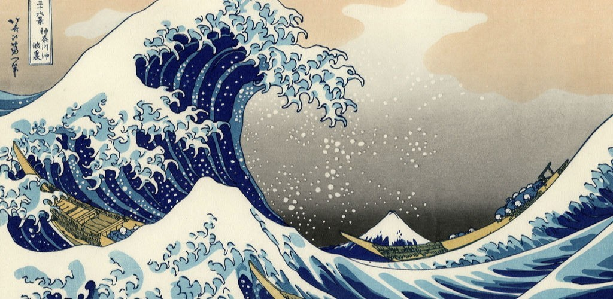
▲浮世绘经典作品《神奈川冲浪图》
在PUMA最新的动向中
就有把浮世绘这种艺术风格
带入到服装和鞋子当中
以海浪绘画向日本传统节日“海の日”致敬
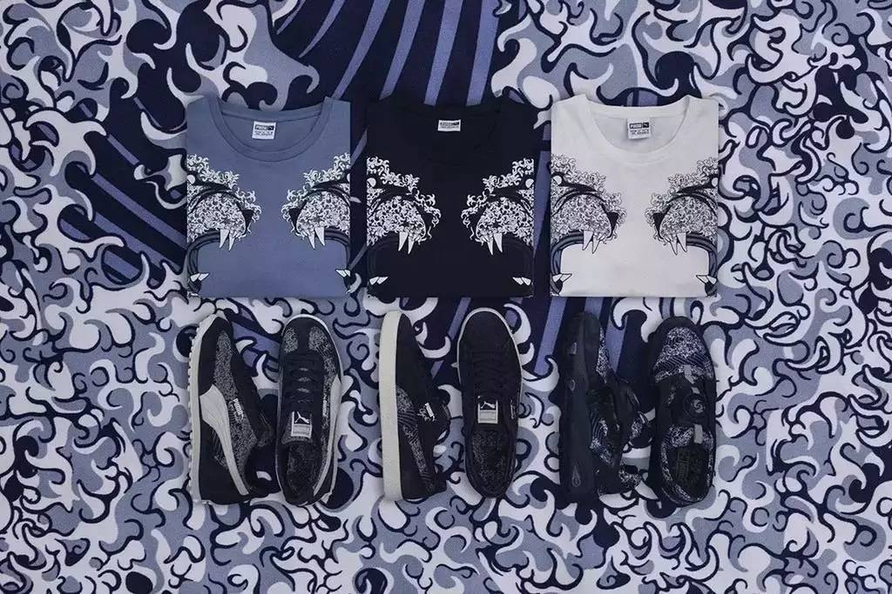
在这次系列的单品中
我们可以看到PUMA带来了
Disc Blaze、Easy Rider 及 Clyde这些经典
在靛蓝色鞋身的衬托下
海浪图案的绘画在不同的鞋款间
以各不相同的形态呈现出来
特色鲜明的三个鞋款
在加入浮世绘元素后
更具有不一样的风情
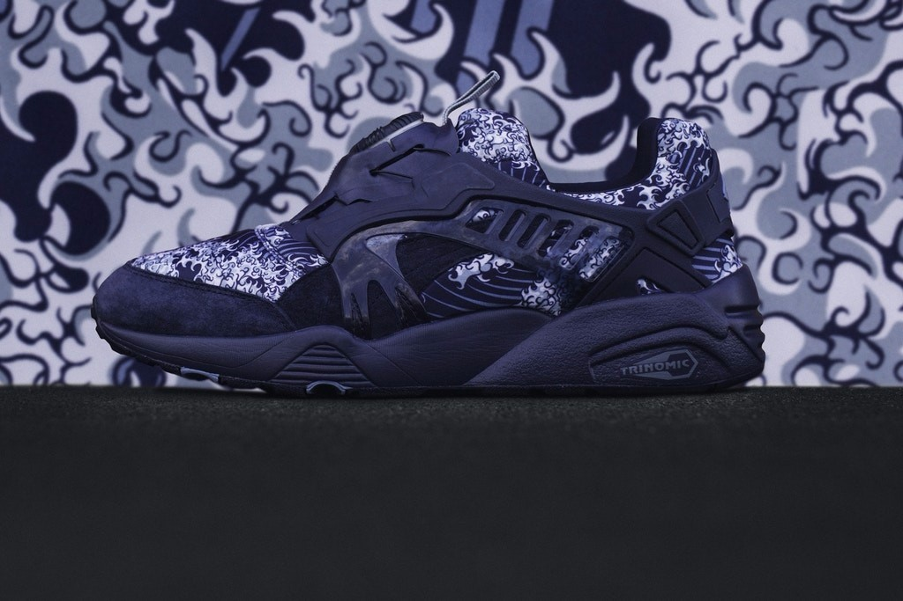
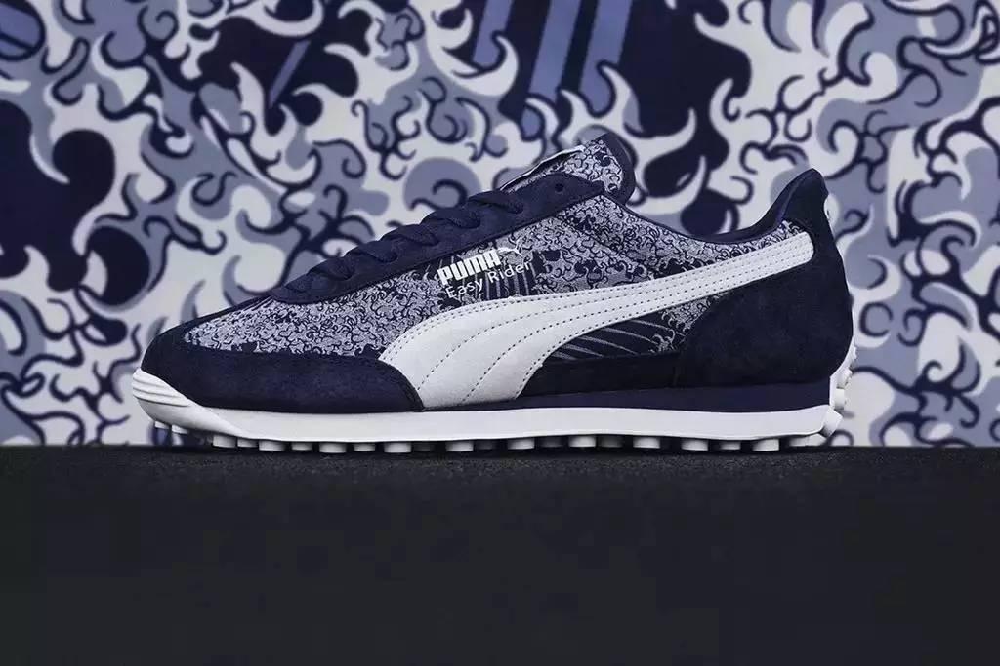

除了带来经典的鞋款外
PUMA这次也带来了Track Jacket 及T恤
这两种常规的单品来进行元素加工
猛虎形象的图案元素
让服装单品看起来
有一种霸气的感觉
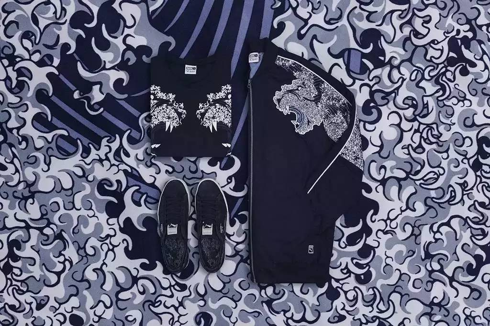
这次系列的作品将会在7月13号
登陆PUMA的指定店铺发售
感兴趣的朋友不妨留意一下哦
在鞋子上融入浮世绘的元素
其实PUMA也不是第一次这样做了
在去年11月的时候
PUMA就有和atmos clyde
以PUMA Suede 作为蓝本进行了联名
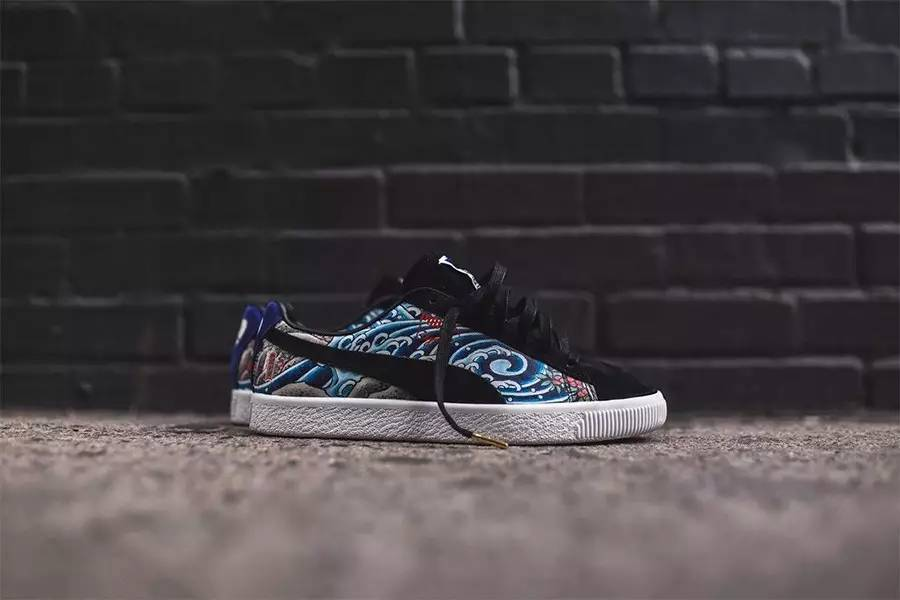
在鞋面上选择日式纹身中
比较常用的图案来进行覆盖
浮世绘风格的图案充分表现个性
后跟处的东京字样
更是表明其联名的身份
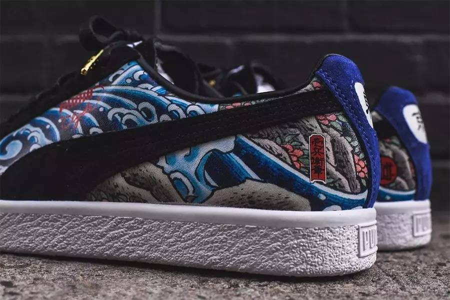

品牌喜欢这种特别的艺术元素
球鞋客制师们当然也不例外
在今年年初的时候
球鞋客制单位Kickasso
就有把当时火热的SF-AF1
来了一次与浮世绘的亲密结合
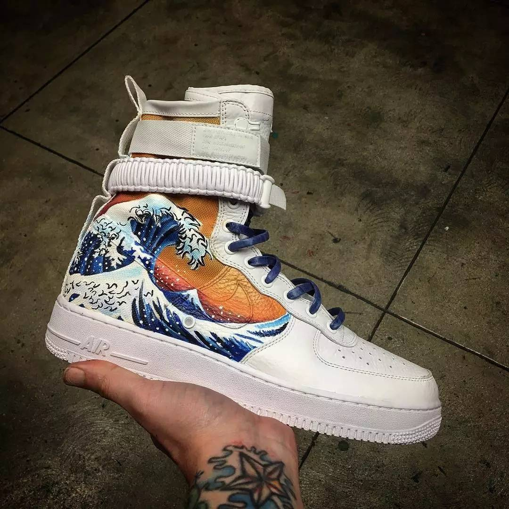
在鞋帮的位置上
以经典浮世绘图案来呈现
鲜艳的图案色彩和纯白鞋身间
形成一种鲜明的对比
带来了强烈的视觉冲击
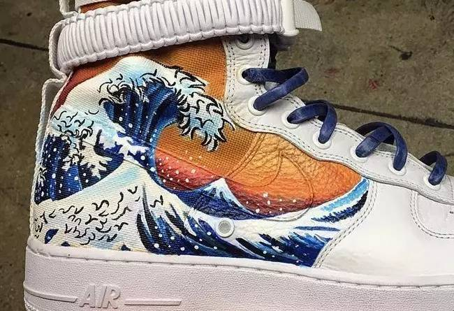
同样是把浮世绘的元素融入鞋子当中
来自香港的球鞋客制师董乔
她的作品可谓是更加细腻了
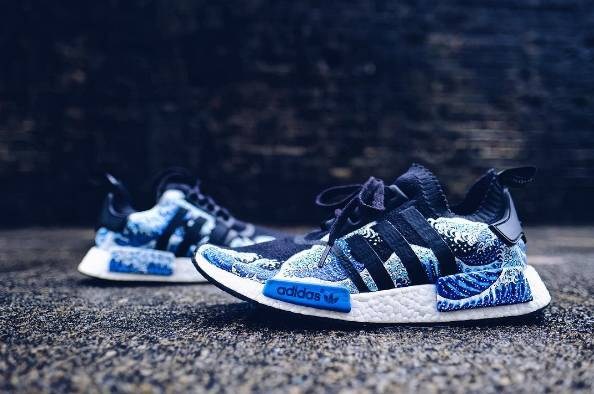
浮世绘风格的海浪元素
呈现在NMD R1的鞋身上
没有一丝的遗和感
在图案的细节处理上
更是非常到位
这双“改装”后NMD
可以说是非常惊艳啊
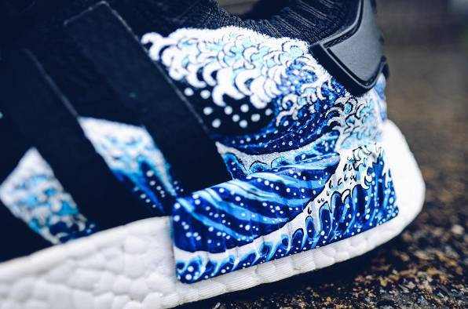
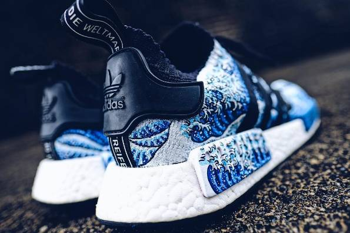
把潮流单品和传统元素结合在一起
这似乎是个不错的想法
但最重要的还是希望设计师
能够了解这些传统元素